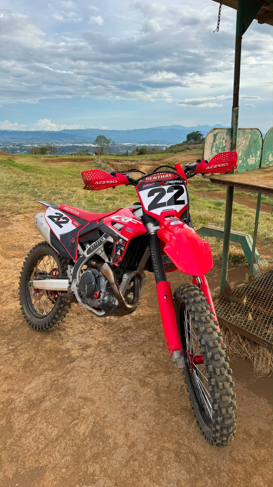
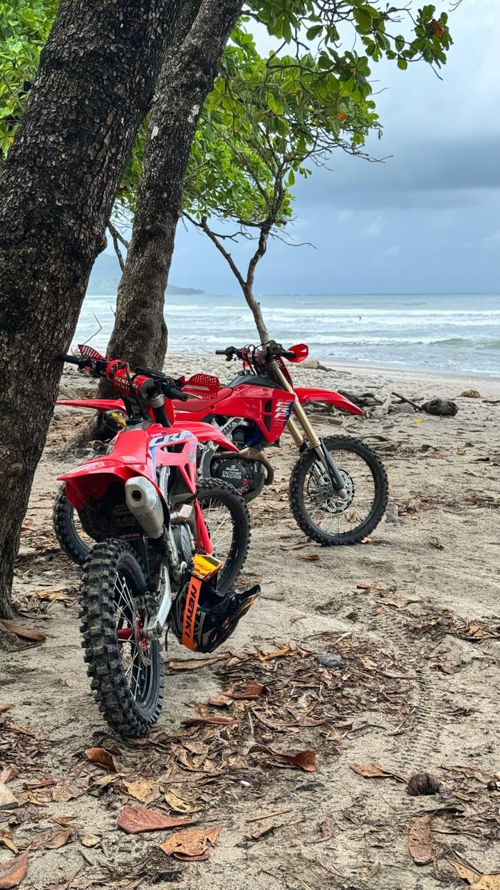
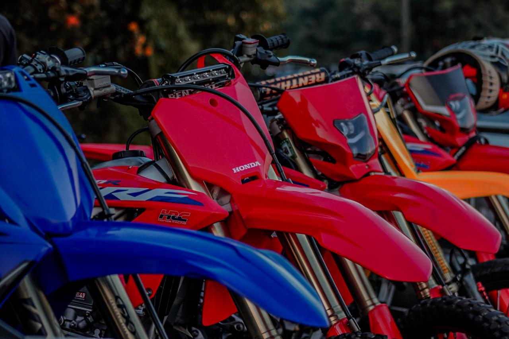
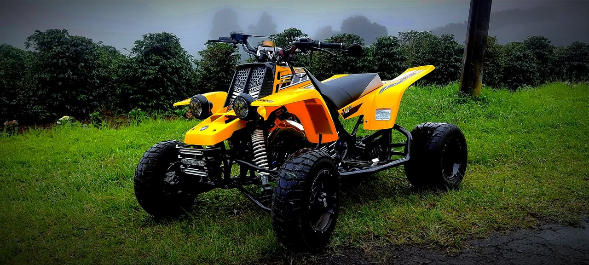
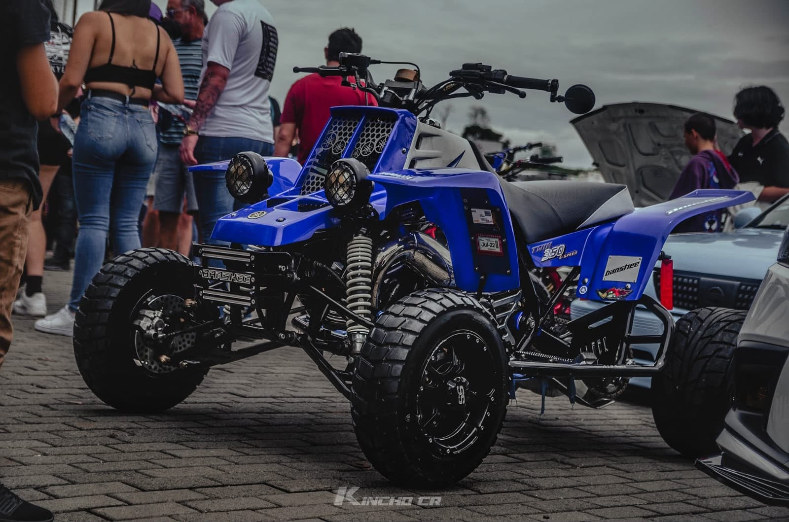
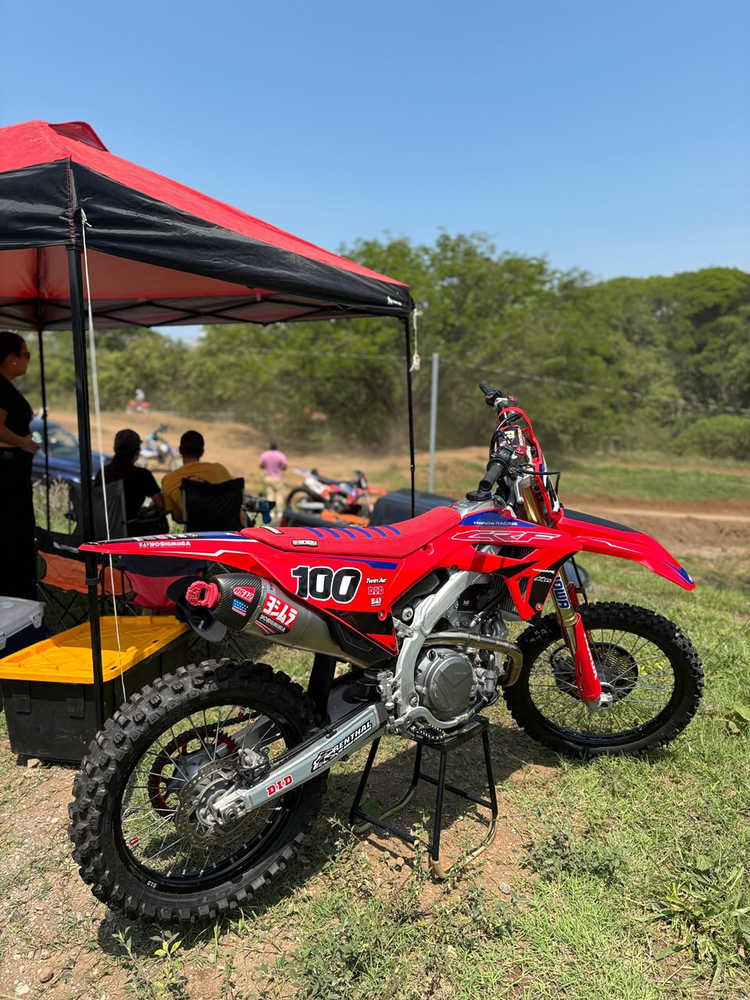

Jordan Herrera Sequeira
instagram: @jherrera_s22
Desde muy pequeño soñaba con ser corredor profesional en alguna categoría de motores, ahora adulto lo sigue soñando.



Puras Motos de Cochera

Variedad de motos y cuadras de los compais
Desde muy pequeño soñaba con ser corredor profesional en alguna categoría de motores, ahora adulto lo sigue soñando.


Puras Motos de Cochera
Poseedor de un cuadraciclo de revista, tanto él como su máquina son buenos consumidores de líquidos.


La plata no, la plata no
Dicen los cuentos de pueblo que ha tenido más motos y cuadras que pelo.

Tiene ciertos problemas con el sueño y las mujeres, pero único del grupo que no está en peligro de extinción.
Le gustaría ser piloto de motocross pero la tierra ensucia la moto.


Brayan digan si está muy sucio para no ir.
El único guerrero del motocross, su ritmo consistente lo ha llevado por el buen camino.


El único 100 que conoce su moto es el de las tapas.